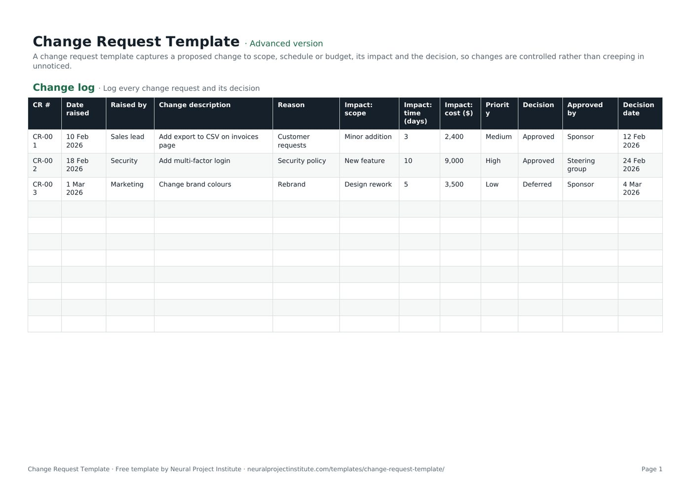

Change Request Template (Free Form and Change Log)
This free change request template gives you two things in one file: a one-page change request form to describe a proposed change and its impact, and a change log that records every request, its decision and who approved it. Download it for Google Sheets, Excel or PDF, in a beginner, advanced or expert version.

Key takeaways
- A change request is a formal proposal to change agreed scope, schedule, budget or another baseline. It is a proposal, not an approval.
- The template has two tabs: a change log for every request and a one-page form for each individual change.
- Assess every change against five areas before anyone decides: scope, schedule, cost, quality and risk.
- Agree approval thresholds in advance so small changes move quickly and large ones reach the sponsor or change control board.
- When a change is approved, update the plan, baseline and stakeholders. An approved change that never reaches the plan is still scope creep.
Free download · no sign-up
Get the change request template
Pick your level and format: Google Sheets, Excel or a print-ready PDF. Spreadsheets include dropdowns, formulas and sample rows you can overwrite.
What is a change request?
A change request is a formal proposal to modify something a project has already agreed, such as its scope, schedule, budget, a deliverable or a plan. It describes the change, explains why it is needed, sets out its impact on time, cost, quality and risk, and records whether the change was approved, rejected or deferred, and by whom.
The PMBOK Guide treats change requests as the input to integrated change control, and earlier editions group them into four kinds: corrective action (bringing performance back in line with the plan), preventive action (avoiding a future deviation), defect repair (fixing a product that does not meet requirements) and updates to project documents or plans.
The key word is *proposal*. Raising a change request does not mean the change will happen. It starts a short, visible process in which someone with the right authority looks at the impact and makes a decision. That process is what stops a project drifting into scope creep.
For the full process around the form, see our change control guide.
Change log preview
The first tab is the change log. The sample rows below show three typical requests at different stages; overwrite them with your own.
| CR # | Date raised | Raised by | Change description | Reason | Impact: scope | Impact: time (days) | Impact: cost ($) | Priority | Decision | Approved by | Decision date |
|---|---|---|---|---|---|---|---|---|---|---|---|
| CR-001 | 10 Feb 2026 | Sales lead | Add export to CSV on invoices page | Customer requests | Minor addition | 3 | 2,400 | Medium | Approved | Sponsor | 12 Feb 2026 |
| CR-002 | 18 Feb 2026 | Security | Add multi-factor login | Security policy | New feature | 10 | 9,000 | High | Approved | Steering group | 24 Feb 2026 |
| CR-003 | 1 Mar 2026 | Marketing | Change brand colours | Rebrand | Design rework | 5 | 3,500 | Low | Deferred | Sponsor | 4 Mar 2026 |
Sample rows are examples: replace them with your own.
What's in the change request template
The template is a spreadsheet with two tabs that work together. Use the Change request form to write up one change in detail, then add a one-line summary of it to the Change log so you can see every request, and the total impact, in one place.
- Change log: CR #, Date raised, Raised by, Change description, Reason, Impact: scope, Impact: time (days), Impact: cost ($), Priority, Decision, Approved by, Decision date
- Change request form: Field, Details
Change log tab
The change log has 12 columns: CR #, Date raised, Raised by, Change description, Reason, Impact: scope, Impact: time (days), Impact: cost ($), Priority, Decision, Approved by and Decision date. In the advanced and expert versions, Decision is a dropdown (Pending, Approved, Rejected, Deferred) and Priority is a dropdown (High, Medium, Low).
Change request form tab
The form is a simple two-column layout (Field and Details) with 12 fields: change request number, requested by and date, description of change, reason or benefit, options considered, impact on scope, impact on schedule, impact on cost, impact on quality and risk, recommendation, decision and conditions, and approved by and date. Use one form per change.
Which version should you download?
| Version | What you get | Best for |
|---|---|---|
| Beginner | One tab with the essential log columns: CR #, Date raised, Raised by, Change description and Decision | Small projects that just need a record of requests and decisions |
| Advanced | Both tabs (change log and change request form) with all 12 log columns and the Decision and Priority dropdowns | Most projects with a sponsor or client who approves changes |
| Expert | Everything in Advanced, plus an instructions tab, a dashboard that counts requests by priority and decision automatically, colour-coded decisions and priorities, and a revision history tab | PMOs, client work and projects with a change control board |
What to include in a change request
A good change request gives the approver enough information to decide without a long meeting. These are the fields in the template, what to write in each, and an example.
| Field | What to write | Example |
|---|---|---|
| Change request number | A unique ID so the request can be referenced in the log, minutes and plan | CR-004 |
| Requested by / date | Who raised it and when | Head of Sales, 3 March |
| Description of change | What would change, in one or two plain sentences | Add a CSV export to the invoices page |
| Reason / benefit | Why it is needed and what happens if you do nothing | Three key customers export invoices by hand each month |
| Options considered | Alternatives, including doing nothing or deferring | Defer to phase 2; offer a manual export report |
| Impact on scope | What is added, removed or altered in the deliverables | New export function and help page |
| Impact on schedule | Extra days and any effect on milestones or the critical path | +3 days; launch date unchanged if approved this week |
| Impact on cost | Extra effort, purchases or fees | $2,400 of developer time |
| Impact on quality and risk | New risks, testing needs or effects on other deliverables | Extra regression testing on invoices |
| Recommendation | What the project manager advises | Approve, using contingency |
| Decision and conditions | Approved, rejected or deferred, with any conditions | Approved, provided launch date holds |
| Approved by / date | Name and role of the decision-maker and the date | Sponsor, 5 March |
How to fill in the change request template
Follow these steps for each change. The whole cycle for a small change can take a day; a large one may need a change control board meeting.
- Give the request a number. Use the next CR # in the change log so every request can be traced.
- Describe the change and the reason. Keep it short and specific. Ask the requester for the business benefit and the date they need it by.
- List the options. Include doing nothing, deferring to a later phase, a smaller version, or swapping it for something already in scope.
- Assess the impact. Estimate the effect on scope, schedule, cost, quality and risk with the people who will do the work (see below).
- Make a recommendation. As project manager, say which option you advise and why.
- Log it and route it for a decision. Add the request to the change log with Decision set to Pending, then send the form to the approver or change control board according to your thresholds.
- Record the decision. Fill in Decision, Approved by and Decision date in both the form and the log.
- Update the plan and tell people. For approved changes, update the project baseline, schedule, budget and scope documents, then tell the team and stakeholders. Tell the requester the outcome of rejected and deferred changes too.
How to assess impact
Impact assessment is where most of the value of a change request lies. Work through these questions with the team members who would do the work:
- Scope: Which deliverables or work packages change? Does anything need to be removed to make room? Check against your work breakdown structure.
- Schedule: How many extra days of effort, and does the change touch the critical path or a fixed milestone?
- Cost: What extra labour, materials, licences or supplier fees are needed? Can contingency cover it?
- Quality: Does it need extra testing, review or sign-off? Could it affect other features?
- Risk: Does it create new risks or change existing ones? Add any new risks to the risk register.
Change request example
Here is a completed form for the second sample row in the template, a request to add multi-factor login to a customer portal project.
| Field | Details |
|---|---|
| Change request number | CR-002 |
| Requested by / date | Security team, 18 February 2026 |
| Description of change | Add multi-factor authentication to the customer portal login. |
| Reason / benefit | Required by the company security policy for systems that hold customer data. |
| Options considered | 1) Add now; 2) Launch without it and add in phase 2; 3) Use the existing single sign-on provider's built-in option. |
| Impact on scope | New feature: second-factor enrolment, login step and recovery process. |
| Impact on schedule | +10 days of development and testing. |
| Impact on cost | $9,000 |
| Impact on quality and risk | Reduces security risk; adds a support risk if users lose access, so a recovery process is needed. |
| Recommendation | Option 1. Launching without it would breach policy. |
| Decision and conditions | Approved. Launch date moves by two weeks; sponsor to inform customers. |
| Approved by / date | Steering group, 24 February 2026 |
Notice that the decision goes to a steering group rather than the sponsor alone. At $9,000 and ten days, it is above the thresholds in the next section. CR-001 in the sample log, a smaller $2,400 change, was approved by the sponsor.
Who approves a change request?
The approver depends on the size of the change and on what your project governance says. Agree thresholds at the start of the project and write them into your project management plan or project charter, so nobody has to argue about who decides.
The table below is an example of how many teams set thresholds. The figures are illustrative; set your own based on the size of the project and the sponsor's appetite for risk.
| Size of change | Example threshold | Who decides |
|---|---|---|
| Small | Under 2 days and under $1,000, no effect on milestones or agreed deliverables | Project manager (log it and report it) |
| Medium | Up to 10 days or up to $5,000, or any change to an agreed deliverable | Project sponsor |
| Large | Over 10 days or over $5,000, or any change to a key milestone, contract or benefit | Change control board or steering group |
| Emergency | Urgent fix to a live service or safety issue | Named emergency approver, with a full change request completed afterwards |
A change control board (CCB) is a group, often the sponsor, the project manager, a client representative and a technical lead, that reviews larger changes together. A RACI matrix is a quick way to make these roles explicit.
Types of change requests
You will see change requests classified in two ways: by purpose (the PMBOK Guide's categories) and by urgency and risk (common in IT change management and many project teams).
| Type | What it means | Example |
|---|---|---|
| Corrective action | Brings work back in line with the plan | Add a second tester to recover a slipped test phase |
| Preventive action | Reduces the chance of a future problem | Order long-lead hardware early |
| Defect repair | Fixes a product or component that does not meet requirements | Rework a report that shows the wrong totals |
| Update | Changes a plan or project document | Revise the communication plan after a reorganisation |
| Standard | Low-risk, routine change with a pre-approved procedure | Add a user to a system |
| Normal / major | Needs a full assessment and formal approval | Add a new module to the scope |
| Emergency | Must happen quickly to fix an urgent problem | Patch a security flaw in a live system |
You do not need to use every category. Many teams add a Type column to the change log or simply use Priority to separate routine requests from those that need the board.
Change request vs change order vs change log
These terms are often used loosely. Here is how they relate.
| Term | What it is | When it is used |
|---|---|---|
| Change request | A proposal to change scope, schedule, cost or another baseline, with its impact | Whenever someone wants to change something already agreed |
| Change order | The binding instruction or contract amendment issued after a change is approved, common in construction and client contracts | After approval, when a contract or purchase order must change |
| Change log | A register of every change request with its status and decision | Throughout the project, as an audit trail |
| Change control | The process for raising, assessing, deciding and implementing changes | Defined at the start; used for the whole project |
Change control is also different from organisational change management, which is about helping people adopt a new way of working.
Change requests in Agile projects
In Scrum and other Agile approaches, most change is expected and handled through the backlog rather than a change request. New ideas go to the Product Backlog, and the Product Owner orders them against existing work. The Sprint Goal is protected during a sprint.
A change request still has a place in Agile work when the change affects something outside the team's control, for example:
- A fixed-price contract or statement of work that defines scope or deliverables.
- A fixed budget or release date that the sponsor has committed to.
- Regulatory, security or contractual requirements.
- Dependencies on other teams or suppliers.
In these cases a lightweight version of the template (often the beginner change log) gives you an audit trail without slowing the team down.
Common change request mistakes
- Accepting changes verbally. A "quick favour" agreed in a meeting never reaches the plan. Log everything, however small.
- Assessing cost but not schedule or risk. A cheap change can still push the critical path or add risk.
- No agreed thresholds. Every change ends up with the sponsor, or none of them do.
- Leaving decisions open. Requests stuck at Pending create uncertainty. Set a target decision time.
- Not updating the baseline. Approved changes must flow into the schedule, budget and scope documents, or your progress reporting will be wrong.
- Ignoring the cumulative effect. Review the total of approved changes, not just each one in isolation.
- Forgetting to close the loop. Tell requesters the outcome, including rejected and deferred requests.
Related templates and guides
A change request rarely stands alone. These documents work alongside it: the project scope template defines what the change is measured against, the RAID log template and risk register template capture the risks and issues a change creates, and the project plan template is where approved changes end up.
 Project Plan TemplateFree project plan template with goals, scope, deliverables, tasks, owners, dates and…Beginner · Advanced · Expert
Project Plan TemplateFree project plan template with goals, scope, deliverables, tasks, owners, dates and…Beginner · Advanced · Expert RAID Log TemplateFree RAID log template to track project Risks, Assumptions, Issues and Dependencies with…Beginner · Advanced · Expert
RAID Log TemplateFree RAID log template to track project Risks, Assumptions, Issues and Dependencies with…Beginner · Advanced · Expert Risk Register TemplateFree risk register and risk assessment template with probability, impact, auto-calculated…Beginner · Advanced · Expert
Risk Register TemplateFree risk register and risk assessment template with probability, impact, auto-calculated…Beginner · Advanced · Expert Project Scope Statement TemplateFree project scope template: objectives, deliverables, in scope, out of scope, acceptance…Beginner · Advanced · Expert
Project Scope Statement TemplateFree project scope template: objectives, deliverables, in scope, out of scope, acceptance…Beginner · Advanced · Expert Project Charter TemplateFree project charter template covering purpose, objectives, scope, milestones, budget,…Beginner · Advanced · Expert
Project Charter TemplateFree project charter template covering purpose, objectives, scope, milestones, budget,…Beginner · Advanced · Expert Work Breakdown Structure (WBS) TemplateFree work breakdown structure template with WBS codes, levels, deliverables, owners,…Beginner · Advanced · Expert
Work Breakdown Structure (WBS) TemplateFree work breakdown structure template with WBS codes, levels, deliverables, owners,…Beginner · Advanced · Expert- Change Control in Project Management: Process and Template
- Change Management vs Change Control: Key Differences Explained
- Scope Creep: Causes, Examples and How to Prevent It
- What Is a Project Baseline? Scope, Schedule and Cost
To set up the full process, including roles and a change control board, see our change control guide.
Frequently asked questions
What is a change request template?
A change request template is a ready-made form for describing a proposed change to a project, explaining why it is needed, assessing its impact on scope, schedule, cost, quality and risk, and recording the decision. This one also includes a change log that lists every request.
Is this change request template free?
Yes. The change request template is free to download in Google Sheets, Excel and PDF, with no sign-up.
What should a change request include?
At minimum: a reference number, who raised it and when, a description of the change, the reason or benefit, the options considered, the impact on scope, schedule, cost, quality and risk, a recommendation, and the decision with the approver and date.
How do I write a change request?
Describe the change in one or two plain sentences, explain the business reason, list the options including doing nothing, estimate the impact with the people who would do the work, make a recommendation and send it to the person who has authority to approve it.
Who approves a change request?
It depends on the size of the change and your governance. Small changes are often approved by the project manager, medium ones by the sponsor, and large ones by a change control board or steering group. Agree these thresholds at the start of the project.
What is a change log?
A change log is a register of every change request on a project, with its impact, decision, approver and date. It gives you an audit trail and shows the combined effect of all changes.
What is the difference between a change request and a change order?
A change request is a proposal that has not yet been approved. A change order is the binding instruction or contract amendment issued once a change is approved, and is common in construction and client work.
What are the types of change requests?
The PMBOK Guide groups them by purpose: corrective action, preventive action, defect repair and updates. Many teams also classify them by urgency and risk, such as standard, normal or major, and emergency changes.
What is a change control board?
A change control board is a group of people, often the sponsor, project manager, a client representative and a technical lead, who review and decide on larger change requests together.
Do Agile projects need change requests?
Most change in Agile projects goes through the Product Backlog, ordered by the Product Owner. A change request is still useful when a change affects a contract, fixed budget, release date or another team.
Can I use the change request template in Excel or Google Sheets?
Yes. Download the .xlsx file for Excel or make a copy in Google Sheets. The advanced and expert versions include dropdowns for Decision and Priority; the PDF is for printing and signing.
Should small changes go through a change request?
Yes, but with a lighter process. Log every change, even small ones, and let the project manager approve those below an agreed threshold. Small unlogged changes are the main cause of scope creep.
What happens after a change request is approved?
Update the project plan, schedule, budget and scope baseline, assign the new work, and tell the team and stakeholders. Record the decision and date in the change log.